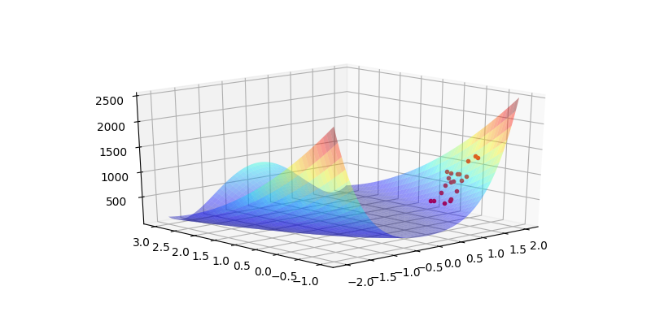
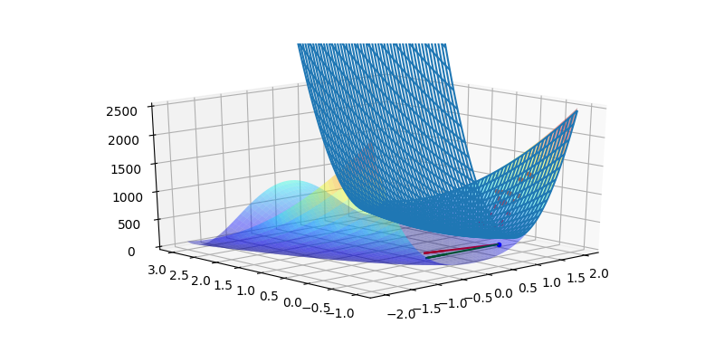

Bir nokta etrafında, herhangi bir boyutta karesel yaklaşıksallama yapmak için bir karesel baz fonksiyonu kullanabiliriz, mesela iki boyut için
$$ p(x) = \left[\begin{array}{ccccc} x_1 & x_2 & x_1^2 & x_1x_2 & x_2^2 \end{array}\right]^T $$
bir baz olabilir, ki $x=\left[\begin{array}{cc} x_1 & x_2 \end{array}\right]^T$ olmak üzere, böylece $f(x) = p(x)^T a$ çarpımı ile bir özgün fonksiyon yaratabiliriz, $a = [a_0, a_1, ...]$ içinde sabitler vardır bu sabitler fonksiyonu özgün olarak belirleyen değerlerdir. Bir anlamda
$$ f(x) = a_0 + a_1 x_1 + a_2 x_2 + a_3 x_1 x_2 + a_4 x_2^2 $$
çarpımının vektörsel halini görmüş olduk.
Peki eğer $a$ katsayılarını bilmiyorsak, verilen bir deney verisi üzerinden katsayıları nasıl buluruz? Üstteki temeli kullanarak bir veriye en az kareler bağlamında en iyi uyan karesel denklemi uydurabiliriz, bunun için her veri noktasını baz fonksiyon üzerinden genişletmemiz gerekir, yani üç boyutlu bir fonksiyondan alınmış olacak $x^1 = (x_1^1,x_2^1), x^2 = (x_1^2,x_2^2), ...,x^n = (x_1^n,x_2^n)$ ve ona tekabül eden $y^1,y^2,...,y^n$ değerleri için
$$ \left[\begin{array}{ccccc} (x_1^1) & (x_2^1) & (x_1^1)^2 & (x_1^1)(x_2^1) & (x_2^1)^2 \\ \vdots & & & & \vdots \\ (x_1^n) & (x_2^n) & (x_1^n)^2 & (x_1^n)(x_2^n) & (x_2^n)^2 \\ \end{array}\right] \mathbf{a} = \left[\begin{array}{c} y^1 \\ \vdots \\ y^n \end{array}\right] $$
ortamını yaratmak gerekir. Bu problemi en az kareler stili ile çözebiliriz.
Fakat bizim icin daha faydali olabilecek bilgi, bir karesel fonksiyon üzerinden ayrıca gradyan ve Hessian bilgisini de alabilmek. Bu bilginin direk alınabileceği en kolay form
$$ f(x) = x^T A x $$
formudur. Bu da çok boyutlu karesel fonksiyonları temsil etmenin bir diğer yolu, ve gradyan $\nabla f (x) = 2 A x$ ve Hessian $\nabla^2 f(x) = 2 A$ ($A$ simetrik ise) ile bu form üzerinden rahatça hesaplanabilir. O zaman istediğimiz öyle bir en az kareler uygulaması ki, elde edilen katsayıları direk $A$ öğeleri olarak alabilelim, ve bu $A$ üzerinden $\nabla f(x)$ ve $\nabla^2 f(x)$ hesaplamak kolay olsun.
Üç boyutlu durumda ne olurdu? Üstteki karesel matris formunu şu şekilde açalım,
$$ x^T A x = \left[\begin{array}{ccc} x_1 & x_2 & x_3 \end{array}\right] \left[\begin{array}{ccc} a_{11} & a_{12} & a_{13} \\ a_{21} & a_{22} & a_{23} \\ a_{31} & a_{32} & a_{33} \end{array}\right] \left[\begin{array}{c} x_1 \\ x_2 \\ x_3 \end{array}\right] $$
$$ = \left[\begin{array}{c} x_1 a_{11} + x_2 a_{21} + x_3 a_{31} \\ x_1 a_{12} + x_2 a_{22} + x_3 a_{32} \\ x_1 a_{13} + x_2 a_{23} + x_3 a_{33} \end{array}\right]^T \left[\begin{array}{c} x_1 \\ x_2 \\ x_3 \end{array}\right] $$
$$
= x_1 x_1 a_{11} + x_1 x_2 a_{21} + x_1 x_3 a_{31} +
$$
$$
x_1 x_2 a_{12} + x_2 x_2 a_{22} + x_3 x_2 a_{32} +
$$
$$
x_1 x_3 a_{13} + x_2 x_2 a_{23} + x_3 x_3 a_{33}
$$
Buradan görülüyor ki $x_{i},x_{j}$ indislerinin $a_{ij}$ indisi ile direk bağlantısı var. O zaman bir döngü içinde tüm $i,j$ kombinasyonlarını yanyana koyarak bir vektör oluşturursak burada elde edilen $A$ matrisi içindeki öğeler beklenen yerlerde olacaktır.
Bir pürüz daha kaldı, iki boyutlu ortamı düşünürsek $x_1^2$, $x_2^2$ var ama tek başına $x_1$ yok, ayrıca tek başına bir sabit değer de gerekli, bu lineer denklemlerdeki kesi (intercept) değeri gibi, karesel denklemi olduğu gibi yukarı, aşağı kaydırabilmemizi sağlayacak. Bunun çözümü basit, üstteki gibi üç boyuttaki denklemde $x_3$ yerine $1$ değerini verirsek,
$$ x^T A x = \left[\begin{array}{ccc} x_1 & x_2 & 1 \end{array}\right] \left[\begin{array}{ccc} a_{11} & a_{12} & a_{13} \\ a_{21} & a_{22} & a_{23} \\ a_{31} & a_{32} & a_{33} \end{array}\right] \left[\begin{array}{c} x_1 \\ x_2 \\ 1 \end{array}\right] $$
Bu bize
$$
= x_1 x_1 a_{11} + x_1 x_2 a_{21} + x_1 a_{31} +
$$
$$
x_1 x_2 a_{12} + x_2 x_2 a_{22} + x_2 a_{32} +
$$
$$
x_1 a_{13} + x_2 x_3 a_{23} + a_{33}
$$
$$
= a_{11} x_1^2 + a_{21} x_1 x_2 + a_{31}x_1 +
$$
$$
a_{12}x_1 x_2 + a_{22}x_2^2 + a_{32} x_2+
$$
$$
a_{13} x_1 + a_{23} x_2 x_3 + a_{33}
$$
denklemini sağlar, yani iki boyutta tam bize gereken denklem. O zaman en az kareler için üç boyutta hazırlayacağımız hesap bize iki boyut için gereken sonucu verir. Tek hatırlamamız gereken gerekli noktalarda bir '1' değerini vektöre eklemektir.
Şimdi optimizasyonun klasik problemlerinden Rosenbrock fonksiyonunu görelim. Bu fonksiyonun belli noktalarından örneklem alacağız, ve bu noktaları kullanarak o noktada bir karesel ara değerleme (interpolation) yapacağız.
from scipy.interpolate import Rbf
from mpl_toolkits.mplot3d import Axes3D
import matplotlib.pyplot as plt
from matplotlib import cm
import numpy as np
import autograd.numpy as anp
import autograd
def random_ball(num_points, dimension, radius=1):
from numpy import random, linalg
random_directions = random.normal(size=(dimension,num_points))
random_directions /= linalg.norm(random_directions, axis=0)
random_radii = random.random(num_points) ** (1/dimension)
return radius * (random_directions * random_radii).T
np.random.seed(0)
N = 20
def rosenbrock(x):
return (1 + x[0])**2 + 100*(x[1] - x[0]**2)**2
def Rosenbrock(x,y):
return (1 + x)**2 + 100*(y - x**2)**2
def get_fvals_in_region(xcurr, f, radius):
b = random_ball(N, 2, radius)
pts = xcurr+b
vals = [f(p) for p in pts]
return xcurr+b, np.array(vals)
x0 = [1.5,0]
xs,vs = get_fvals_in_region(x0, rosenbrock, 0.5)
res = []
for i in range(vs.shape[0]):
res.append((xs[i,0],xs[i,1],vs[i]))
res = np.array(res).reshape(vs.shape[0], 3)
x = np.linspace(-2,2,250)
y = np.linspace(-1,3,250)
X, Y = np.meshgrid(x, y)
Z = Rosenbrock(X, Y)
fig = plt.figure(figsize = (8,4))
ax = fig.gca(projection='3d')
ax.plot3D(res[:,0],res[:,1],res[:,2],'r.')
ax.plot_surface(X,Y,Z,rstride = 5, cstride = 5, cmap = 'jet', alpha = .4, edgecolor = 'none' )
ax.view_init(21, -133)
plt.savefig('func_70_dfo_01.png')

Şimdi üstteki örneklem noktalarını kullanarak ona en yakın karesel fonksiyonu bulalım,
import itertools
import numpy.linalg as lin
def quad_interpolate(xi, yi):
xi = np.hstack((xi, np.ones((1,len(xi))).T ))
#print (xi)
D = xi.shape[1]
print (D)
X_train = []
for row in xi:
X_train.append([row[i]*row[j] for i,j in itertools.product(range(D),range(D)) ])
X_train = np.array(X_train)
print (X_train.shape)
print (yi.shape)
coef,_,_,_ = lin.lstsq(X_train, yi)
return coef
xi = res[:,[0,1]]
yi = res[:,[2]]
coef = quad_interpolate(xi,yi)
print (coefs)
3
(20, 9)
(20, 1)
[[ 1549.94077306 -331.73935453 -1646.09015508]
[ -331.73935453 108.66378197 273.04187866]
[-1646.09015508 273.04187866 1960.85629284]]
x = np.linspace(-2,2,250)
y = np.linspace(-1,3,250)
X, Y = np.meshgrid(x, y)
Z = Rosenbrock(X, Y)
fig = plt.figure(figsize = (8,4))
ax = fig.gca(projection='3d')
ax.plot3D(res[:,0],res[:,1],res[:,2],'r.')
ax.plot_surface(X,Y,Z,rstride = 5, cstride = 5, cmap = 'jet', alpha = .4, edgecolor = 'none' )
def q_interp(x1,x2):
x = np.array([[x1,x2,1]])
A = coef.reshape(3,3)
res = np.dot(np.dot(x,A),x.T)
return np.float(res)
Zi = np.array([q_interp(xx,yy) for xx,yy in zip(X.flatten(),Y.flatten())])
Zi = Zi.reshape(X.shape)
ax.plot_wireframe(X,Y,Zi)
coefs = coef.reshape(3,3)
g = (2 * np.dot(coefs[:2,:2],np.array(x0).reshape(2,1)))
gnorm = g / np.sum(g)
ax.set_zlim(0,2500)
ax.quiver(x0[0], x0[1], 0, -gnorm[0], -gnorm[1], 0, color='red')
hess = 2*coefs[:2,:2]
print (hess)
newton_dir = -np.dot(lin.inv(hess),g)
print (newton_dir)
d = newton_dir
print (d)
ax.quiver(x0[0], x0[1], 0, d[0], d[1], 0, color='green')
ax.plot3D([x0[0]], [x0[1]], [0.0], 'b.')
ax.view_init(21, -133)
plt.savefig('func_70_dfo_02.png')
[[3099.88154613 -663.47870906]
[-663.47870906 217.32756394]]
[[-1.50000000e+00]
[ 1.77635684e-15]]
[[-1.50000000e+00]
[ 1.77635684e-15]]

Görüldüğü gibi en az karelerle hesaplanan $A$ üzerinden Hessian ve Jacobian hesabı çok kolay oldu. Bu değerlerle o noktada gradyan inişi ve Newton adımı yönlerini hesapladık.
Fakat dikkat etmek gerekir; her ne kadar yaklaşıklama Hessian ve Jacobian için gerçeğe yakın değerler hesaplasa bile, bazen Newton hesabı açısından bu yeterli olmayabilir.
Alttaki kod içinde scipy.optimize üzerinden ve bizim ara değerleme
üzerinden hesaplanan Hessian ile global minimum'un trust-constr ile
bulunabildiğini görüyoruz. İşleyebileceği açısından paylaşmak istedik,
fakat oldukca fazla döngü yapıldığına dikkat.
from scipy.interpolate import Rbf
from mpl_toolkits.mplot3d import Axes3D
import matplotlib.pyplot as plt
from matplotlib import cm
import numpy as np
import itertools
import numpy.linalg as lin
import scipy.linalg as slin
from scipy.optimize import minimize
np.random.seed(0)
N = 20
def random_ball(num_points, dimension, radius):
from numpy import random, linalg
random_directions = random.normal(size=(dimension,num_points))
random_directions /= linalg.norm(random_directions, axis=0)
random_radii = random.random(num_points) ** (1/dimension)
return radius * (random_directions * random_radii).T
def rosenbrock(x):
return (1 - x[0])**2 + 100*(x[1] - x[0]**2)**2
def Grad_Rosenbrock(x):
g1 = -400*x[0]*x[1] + 400*x[0]**3 + 2*x[0] -2
g2 = 200*x[1] -200*x[0]**2
return np.array([g1,g2])
def Hessian_Rosenbrock(x):
h11 = -400*x[1] + 1200*x[0]**2 + 2
h12 = -400 * x[0]
h21 = -400 * x[0]
h22 = 200
return np.array([[h11,h12],[h21,h22]])
def get_fvals_in_region(xcurr, f, radius):
b = random_ball(N, 2, radius)
pts = xcurr+b
vals = [f(p) for p in pts]
return xcurr+b, np.array(vals)
def get_hess_grad_rosenbrock(xcurr):
xs,vs = get_fvals_in_region(xcurr, rosenbrock, 1.0)
res = []
for i in range(vs.shape[0]):
res.append((xs[i,0],xs[i,1],vs[i]))
res = np.array(res).reshape(vs.shape[0], 3)
xi = res[:,[0,1]]
yi = res[:,[2]]
xi = np.hstack((xi, np.ones((1,len(xi))).T ))
D = xi.shape[1]
X_train = []
for row in xi:
X_train.append([row[i]*row[j] for i,j in itertools.product(range(D),range(D)) ])
X_train = np.array(X_train)
coef,_,_,_ = lin.lstsq(X_train, yi)
coefs = coef.reshape(3,3)
jac = (2 * np.dot(coefs[:2,:2],np.array(xcurr).reshape(2,1)))
hess = 2*coefs[:2,:2]
return jac, hess
def Hessian_interp(xcurr):
jac, hess = get_hess_grad_rosenbrock(xcurr)
hess2 = Hessian_Rosenbrock(xcurr)
return hess
def Grad_interp(xcurr):
jac, hess = get_hess_grad_rosenbrock(xcurr)
return jac.flatten()
import warnings
warnings.simplefilter(action='ignore', category=FutureWarning)
x0 = [-1.0,0]
opts = {'maxiter': 5000, 'verbose': 1}
res = minimize (fun=rosenbrock,
x0=x0,
method = 'trust-constr',
jac = "2-point",
hess= Hessian_interp,
options=opts)
print (res)
`xtol` termination condition is satisfied.
Number of iterations: 3709, function evaluations: 11021, CG iterations: 6116, optimality: 3.60e-05, constraint violation: 0.00e+00, execution time: 5.2e+01 s.
cg_niter: 6116
cg_stop_cond: 3
constr: []
constr_nfev: []
constr_nhev: []
constr_njev: []
constr_penalty: 1716852584925.6943
constr_violation: 0
execution_time: 52.41613221168518
fun: 1.2379022295831926e-09
grad: array([ 1.06847554e-05, -3.59999699e-05])
jac: []
lagrangian_grad: array([ 1.06847554e-05, -3.59999699e-05])
message: '`xtol` termination condition is satisfied.'
method: 'equality_constrained_sqp'
nfev: 11021
nhev: 3656
nit: 3709
niter: 3709
njev: 0
optimality: 3.599996991621168e-05
status: 2
success: True
tr_radius: 8.305972874146413e-09
v: []
x: array([0.99996487, 0.99992955])